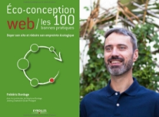

Agir à son échelle, c’est agir pour celle-ci
Internet n’a jamais été aussi accessible, simple et ludique, notre utilisation suit
cette évolution logique et s’amplifie quotidiennement. Il est donc essentiel de prendre à contre-pied cet «
effet rebond».

Chacun doit agir pour que ce monde du numérique, devienne plus juste et
responsable.


Consommer moins : une question d’habitudes.
Chacun peut avoir un impact positif son sur environnement, utiliser un navigateur de recherche responsable comme
Ecosia en fait partie.
Une solution à nuancer tout de même, cette démarche s’appuie sur le moteur de recherche de Google, Ecosia n’en
est qu’une extension. Certains y voient du Greenwashing quand d’autre en font les honneurs.
Cette alternative controversée propose tout de même une bonne idée : utiliser les fonds générés par les
recherches pour planter des arbres dans des zones sensibles au réchauffement climatique.
“Si une personne sur 5 utilisait Ecosia et non pas Google, on pourrait planter assez
d’arbre
pour séquestrer toute les émissions de carbones du monde, d’une année.”
Ferdinand Richter, responsable d’Ecosia France
Greenwashing
Le greenwashing, est une pratique commerciale qui consiste à utiliser des arguments environnementaux souvent
trompeurs pour vendre des produits qui ne sont pas, la plupart du temps, si verts.
Pour consommer moins,
plusieurs possibilités
s’offrent à vous :
Modifiez vos habitudez
Privilégier les transferts de donnés par support matériel ou réseau local au cloud car son fonctionnement
sollicite les bases de données pour faire transiter les informations.

Prenez-en de nouvelles
Optimiser son utilisation des plateformes de streaming
Regarder des vidéos en basse résolution et favoriser le téléchargement au streaming.

L’écoute de musique sur YouTube consomme bien plus qu’une simple musique écouté sur Spotify, Deezer… Éviter la 4G
pour lire des vidéos, la 4G consomme 23 fois plus d’énergie que le WI-FI.
Des gestes au quotidien peuvent diminuer votre impact écologique tout en vous faisant réaliser des économies.
Faites régulièrement le ménage dans vos emails, Cleanfox, un outil
dédié à cette action peut vous aider à le
faire plus efficacement.

Lorsque vous en envoyez, limitez leur taille en les compressant (.zip) et le nombre de destinataire à
l’essentiel, multiplier par 10 le nombre des destinataires multiplie par 4 son impact.
Éteignez votre box internet la nuit ou durant vos absences, même lorsque vous n’êtes pas sur internet, ces
équipements consomment.
Prenez l’habitude de rédiger vos messages au lieu de faire des enregistrements vocaux.

Vous n’êtes pas seul
D’autres agissent, tentent de nouvelles innovations pour améliorer notre rapport au monde du
numérique. Frédéric
Bordage, spécialiste français du numérique responsable, s’est penché sur la question pour proposer des
alternatives quant à la réalisation de sites internet. Son livre “Éco-conception
web, les
115 bonnes
pratiques”
apporte des solutions concrètes simples ou complexes pour réaliser des sites moins énergivores.

Frédéric Bordage